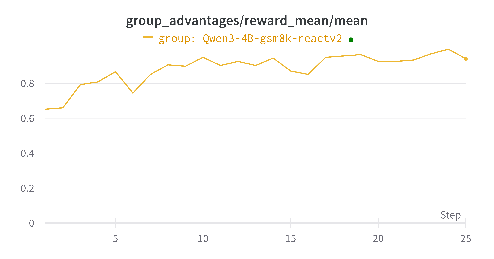
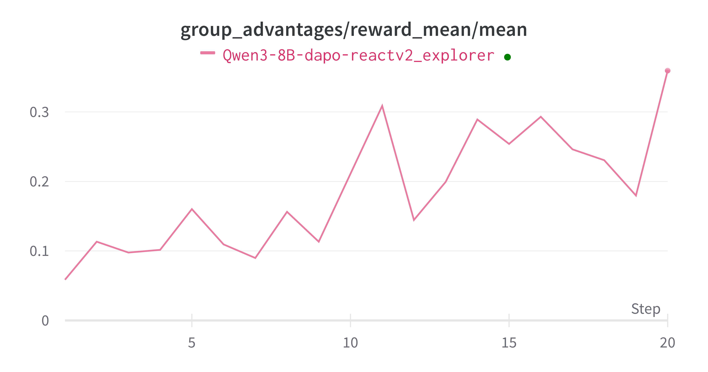
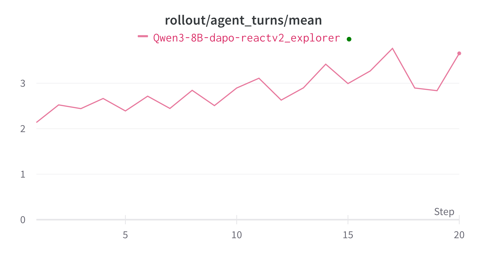
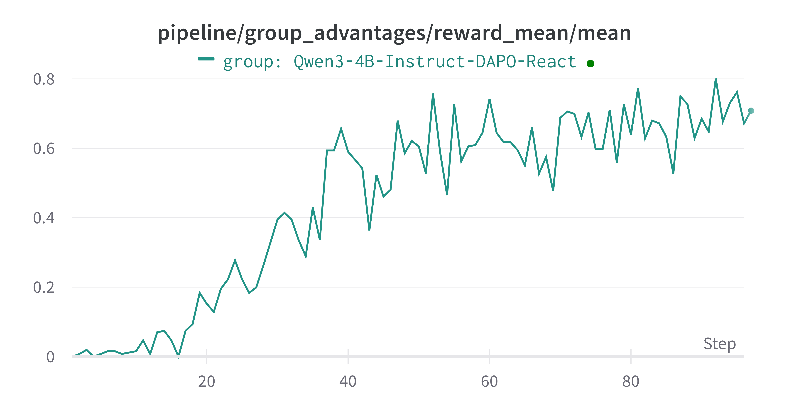

ReAct 例子#
本示例用于演示如何通过我们兼容 OpenAI 接口的 ModelWrapper 类，将 Trinity-RFT 训练工作流适配到你自己的智能体项目中。
这里我们以 AgentScope 框架为例，但你完全可以使用其他任何框架，因为 Trinity 提供了极大的灵活性。该示例利用一个采用 ReAct 风格推理并支持原生工具调用的智能体（Agent），在 GSM8K 数学数据集上对模型进行微调。
关键特性#
此示例突出了 Trinity-RFT 框架的几项高级特性：
与外部智能体框架的无缝集成#
Trinity-RFT 被设计为高度模块化，因此你可以轻松地将来自外部框架（如 AgentScope）的复杂、现成的智能体逻辑直接嵌入到 Trinity 的 Workflow 中。
无需重写智能体：你不必在 Trinity 内重新实现智能体的复杂逻辑（例如 ReAct 循环、内存管理或工具调用）。
关注高层编排：正如我们在
AgentScopeReactV2MathWorkflow中所展示的那样，Trinity 工作流只需初始化并调用外部智能体的reply方法。Trinity 对底层复杂性负责，使你能专注于高层任务编排和奖励设计。
通用多步训练#
现代智能体任务通常涉及多步推理、工具使用和观察。Trinity-RFT 原生支持跨这些多步交互的训练。
逐步步经验生成：Trinity 不仅从最终结果进行学习，还能将智能体推理轨迹中的每一步视为独立的学习经验（experience）。
奖励分配：解决任务的奖励（reward）会传播至成功轨迹内的所有 experience，使模型能够学习整个推理链，而不仅仅是最终响应。这由配置中的
advantage_fn控制。
原生工具调用支持#
Trinity-RFT 的推理引擎和训练流水线专为支持原生 OpenAI tool_calls 格式而构建。
学习使用工具：该框架允许模型学习何时调用工具、调用哪个工具以及使用什么参数，全部采用标准
tool_calls格式。易操作性：这种原生支持确保了与任何消费 OpenAI API 格式的服务或环境无缝集成，例如
MCP_server（多智能体协作平台）或其他工具使用评估器。
工作原理#
下面我们逐步介绍如何执行此流程。
工作流 (workflow.py)#
核心逻辑封装在 AgentScopeReactV2MathWorkflow 类中。
初始化 (
__init__)首先初始化 AgentScope 环境和所需的 Agent（
ReActAgentV2）。最关键的集成步骤是将 Trinity 的模型客户端注入到 Agent 中：
self.openai_client = model.get_openai_client() # self.openai_client = get_openai_async_client() # or async client depend on whether you are using async openai client # ... self.agent.model.client = self.openai_client
这确保了 Agent 发出的所有 API 请求都通过 Trinity 的
ModelWrapper进行路由，后者会记录完整的对话历史。
执行 (
run)run方法非常简洁，它只是将任务描述传递给 Agent。content = self.agent.reply(msg).content # your agent logic
在 Agent 完成其多步推理并产生最终答案后，Trinity 从模型历史中提取所有中间轮次：
experiences = self.model.extract_experience_from_history(clear_history=True)
基于最终答案计算奖励，并将其应用于从该轨迹生成的所有
Experience对象。然后这些 experiences 被发送到 Buffer 中用于训练。
配置说明#
配置文件用于微调整个系统的行为。以下是本示例的关键参数：
原生工具调用设置#
explorer.rollout_model 部分的这些设置用于配置基于 vLLM 的引擎，以生成和解析兼容 OpenAI 的工具调用。
我们使用 Qwen3 模型并通过 vLLM 托管模型。不同模型的配置可参考 vLLM Toolcalls
explorer:
rollout_model:
# ...
enable_auto_tool_choice: true # 允许模型生成 `tool_calls`
tool_call_parser: hermes # 指定格式化解析工具调用输出的解析器
reasoning_parser: deepseek_r1 # 有助于解析模型的思维过程
enable_thinking: true # 允许模型生成中间“思考”内容
多步训练策略#
algorithm 部分的此设置定义了如何处理多步 rollout 产生的 experience。
algorithm:
algorithm_type: grpo
advantage_fn: step_wise_grpo # 多步训练的关键
step_wise_grpo：该策略告诉 Trinity 为智能体执行路径中的每一步创建独立的训练样本。grpo算法随后使用这些样本来更新模型。
异步同步提升效率#
由于多步 rollout 会产生数量不固定的 experience，等待固定数量的 rollout 是低效的。我们采用动态同步策略。
synchronizer:
sync_style: dynamic_by_explorer # 当积累足够 experience 时即开始训练
sync_interval: 2
sync_style: dynamic_by_explorer：当缓冲区收集到足够的 experience（即单个对话轮次）时，trainer 即启动一次训练任务，而不是等待固定数量的完整智能体轨迹。这显著提高了 GPU 利用率和训练吞吐量。
如何运行示例#
前置条件：确保已安装 Trinity 及本示例所需依赖（如
AgentScope）。请参考 Agentscope Github link
注意：本示例需要以下来源之一的 AgentScope：
Commit:
ad13ed5dacecb79d20abf626769f8c7d7a7d2afb分支:
v0
下载你想使用的模型，并填写
examples/agentscope_tool_react/agentscopev0_tool_react_gsm8k.yaml或examples/agentscope_tool_react/agentscopev0_tool_react_dapo.yaml中的配置文件启动训练任务：从仓库根目录运行以下命令。
trinity run --config examples/agentscope_tool_react/agentscopev0_tool_react_gsm8k.yaml
或
trinity run --config examples/agentscope_tool_react/agentscopev0_tool_react_dapo.yaml
GSM8K 数据集的示例非常简单，在 8 块 H20 GPU 上几分钟内即可收敛。

DAPO 数据集的示例耗时稍长，但也能够收敛。

我们还可以看到，模型总体上开始更多地使用工具调用来解决问题。

我们也可以把使用 v1 版本的 AgentScope 仓库，然后对 Qwen3-4b-instrcut-2507 进行训练：

总结#
这个示例虽然简单，但展示了 Trinity 在训练使用工具的复杂多步智能体方面的强大功能和灵活性。通过无缝集成外部智能体逻辑，并提供对多步训练和工具调用的原生支持，Trinity-RFT 使你能够高效地在复杂且真实的任务上微调模型。